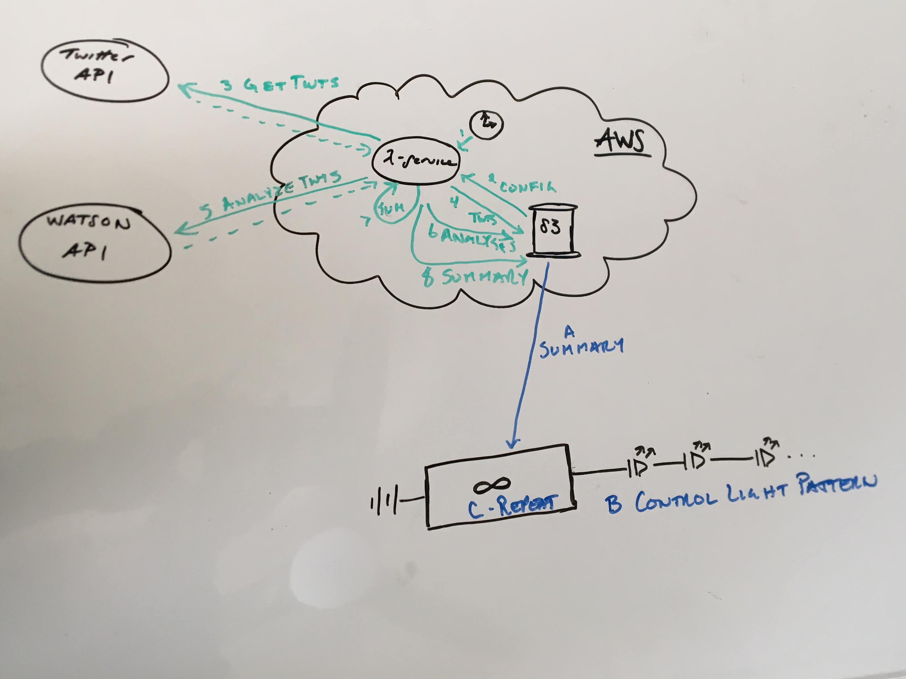
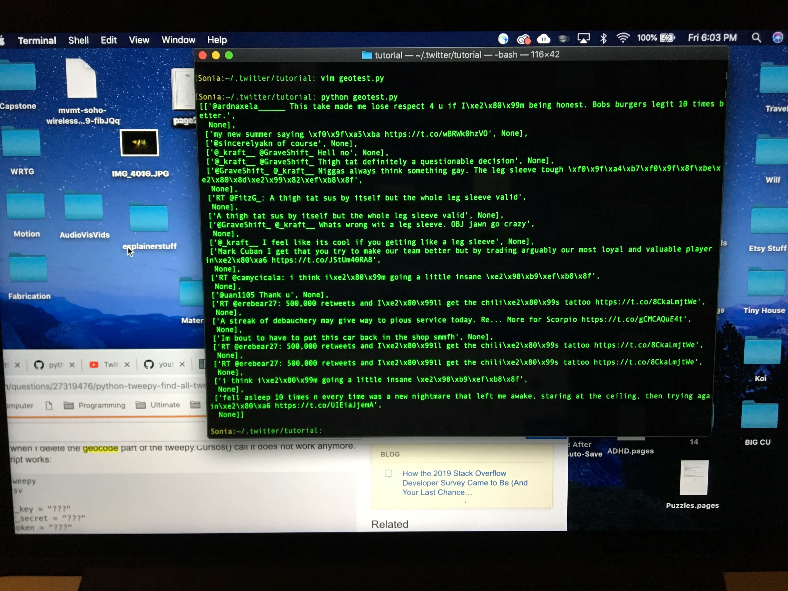

There is a huge amount of data contained in Twitter, what’s tricky is finding a way to access it and then deciding how to use it. I started out with the intention of pulling tweets from a specific geo location (say Boulder, CO) and measuring the emotional tone using IBM’s Tone Analyzer and changing the color of the LEDs depending on the results. I was able to get the code working, but it wasn’t returning very many tweets, I knew there had to be more than 10 people tweeting in all of London, England over the course of a minute. The problem was that most people don’t add a geo tag to their tweets, so only a small percentage of tweets from a certain location were getting returned.
I decided to abandon that route and return to my original idea of counting tweets containing specific positive keywords and having the LEDs react when the counters reached a certain threshold. Getting the Twitter API to work was tricky, I played with both the Tweepy and Twython libraries trying to get the code to behave. The main issue I was running into was the strict call limits that Twitter APIs have. You can only pull about 100 tweets every 15 minutes before you’re locked out and the code shuts down, not ideal if you’re trying to live stream tweets. Finally I was able to find an API that was specifically meant for live streaming tweets and wouldn’t shut down after a few minutes.
Once I could pull the data I wanted I needed to decide what the relationship between the data and the LEDs would be. Initially, my thought was to only track positive keywords then with a color assigned to each one have the tree light up that color when a keyword was used enough to hit a certain threshold. That method didn’t feel like it visualized the processed data well enough though. I decided to shift the concept a little and track both positive and negative emotions to get the full emotional tone of twitter and not just the happy parts. I decided to assign a color to each emotion. Anger, fear, happiness, eco-friendly, contentment, sadness, and love would map to red, orange, yellow, green, cyan, blue, and purple. The 49 bulbs on the tree would be split into 7 groups, 1 for each emotion/color. Their brightness of each group of lights would depend on how strongly Twitter was feeling that emotion at the time. I got the code working for this model, but I found that it wasn’t visually clear enough which emotion was most prevalent from moment to moment. The logic had to be changed to better display what was happening. I finally decided to add all the tweets being read in together and then calculate what proportion of them belonged to each emotion. Then the tree gets lit using those numbers, that is to say, if 50% of the tweets were angry then 50% of the lights on the tree would be red. This made it much more apparent what the general mood of Twitter was because a certain color would dominate the tree.
I tried hard to pick keywords to represent the emotions that didn’t have ambiguous meanings and that were equally popular so that the results wouldn’t be skewed one way or the other. It’s not a perfect system, but I tried to make it as fair as possible. I was initially worried that the emotional state of Twitter wouldn’t be what I’d hoped. I worried it would be more angry and sad and scared than happy and full of love, but I was extremely relieved to see that the most popular emotion by far was love.
I don’t have a lot of experience with fabrication, it was an interesting journey of learning mostly by doing. Estimating the amount of time certain steps would take was the biggest challenge for me. When you’re working with an unfamiliar material, it’s very hard to know how long something will take. The first tree I started to make was inspired by Tara Donovan’s work and was made entirely out of notecards. I figured out pretty quickly that there was absolutely no way that it would be finished in the timeframe needed. I had to scrap it and figure out a new material to use.
If nothing else Capstone teaches you how to problem solve and work within certain constraints. What material would be both workable and affordable? I decided to try using aluminum foil. It was something I could mold, shape, and build out as well as hammer and smooth if I had enough patience. The goal was to get the shape of the tree and then make the foil almost unrecognizable through hammering and smoothing. It took many, many more hours than I thought it would to get the tree to the right shape and thickness. Once it was time to hammer and compress the foil I realized the odd shape of the foil meant it couldn’t be smoothed to the point of looking more like metal than aluminum foil.
Again I needed to problem solve. How could I make it look more complete? How could I make it look polished and finished rather than like just an elaborate arts and crafts project? I decided to use quickset concrete to cover it. Aluminum and concrete don’t react well with each other so first I covered the tree in plastic wrap. I worried the concrete would slide off of the plastic so I added dots of hot glue to add texture and give the concrete something to hold onto. From there it was just about putting in more hours to mix batches of concrete and apply them to the tree by hand. There were a few cracks here and there, but the tree ended up looking much more complete than before.
The next obstacle was figuring out where the lights would hang around the branches. To solve this I prototyped the top structure using cardboard and string. I’d bought 50 plain white glass ball Christmas ornaments when they’d gone on sale after the holiday with the plan of using them as makeshift bulbs. Tearing filaments out of real lightbulbs is tedious and results in a lot of broken bulbs, this seemed like a better and cheaper solution. To get an idea of what the final product should look like I tied a piece of string to each bulb and glued them to the board at the height I wanted. Then I measured how long each string was and labeled it. After that I traced a path of how each bulb would be wired, labeling the bulbs 1 - 49. Finally, I calculated exactly what length each piece of wire needed to be for each LED.
Then it was time for the real thing. I bought thin plywood, it was affordable, light weight, and large enough to make the top box. After cutting it to the proper dimensions I measured where each string was on the prototype and then copied it onto the real board by hand, labelling each one as I went. I had ordered 22 gauge flexible silicon wire for the job so I drilled holes big enough to fit of those wires in each. Based on my calculations from the prototype I measured and cut each piece of wire that would be used to solder together the LEDs and labelled them by bulb number. All of the wire was black to make it look cleaner, but I needed a way to tell which wires were the positive, ground, and lead. I decided to paint the ends of the wires with red and green paint to distinguish them. After that it was just about soldering them all together. It became a practice in patience and resilience to sit bent over on the ground for hours and hours soldering and testing the LEDs to make sure the connection was good. Time was getting short and I needed to finish. Once the LEDs were connected it was time to build the rest of the box and legs.
Turns out making a wood box is more complicated than slapping 5 pieces of wood together. To get the right angles of the corners required special bindings that needed to be screwed in. These paired with wood glue held everything in place. Once the box was dry, holes needed to be drilled to push the poles through that would hold up the structure. After everything was relatively stable, the entire structure was painted black.
After that it was just about the smaller details. Initially I’d wanted a bottom structure for the poles to attach to and to hold the tree, but that didn’t seem necessary in the end. I decided to just buy some black fabric to put on the display table to make the display look more complete. The last thing I did was wrap all the wires in electrical tape to make them look less messy. It’s little things like that that you don’t account for in your timeline. Who knew it would take 8 hours just to wrap wires in electrical tape. A practice in resilience until the very end.
Finishing the tree out of notecards just wasn't realistic with the deadline approaching, so I needed to change course and choose a different material to make it out of. I finally decided on tin foil because it's affordable and workable. I don't want it to end up looking too arts & craft-y, but I think if I hammer, sand, and polish the foil enough it will hopefully look more like traditional metal than a bunch of tin foil scrunched together.
Because of the shape of the tree, there was no way to hammer it to a point where it wouldn't look like tin foil. I needed to cover it with something to make it look more polished and complete. After learning about it in my Material class, I decided to use quick setting concrete. Concrete doesn't react very well to aluminum so fist the tree had to be covered with plastic wrap. I added dots of hot glue to the body of the tree to add some texture and make sure the concrete wouldn't just slide off. From there I started mixing concrete and applying it to the tree by hand until it looked smooth enough.
Derk really helped me figure out how the framework of the code needed to be structured in order to work. He gave me a quick lesson on AWS and broke down the different parts of the project that needed to be programmed and gave me a good idea on how to get started. He stressed the importance of the Agile approach and suggested that I should always have a working version of the project if at all possible. I wondered if I would be able to have some sort of interface that would show what was happening on the tree either showing what hashtags were currently triggering the lights or even having a place where viewers could type in a city for Watson to analyze. I tend to get ahead of myself and then get overwhelmed with everything there is to do. Derk told me to focus on high risk things first, get the project to a place where it's working and then worry about the extras.
I wasn't sure what to do about the data from Twitter. I wasn't sure if I should try to filter it or stream tweets based on different parameters and I still didn't know how far the call limit could be pushed without hindering the project. After taking a look, Taylor suggested switching platforms from Twitter to Instagram. It's a smart choice, Instagram tends to be more positive than Twitter and people use hashtags much more often. He'd used an instagram web crawler for a past project that he said was easy to use, didn't have a call limit, and didn't require credentials.
I started the project just focusing on fabricating the tree using notecards. I knew it would be time intensive gluing each individual notecard, but the tree has been growing much more slowly than I'd hoped given the amount of time that I've already spent on it. I worry I won't have time to finish it, or that it's just not the right decision to spend so much time making just one part of the project. It seems like a shame to bail on it after so much time has already been spent on it, but I'm definitely considering different options at this point.
After consulting my mentor, Derk Norton, about the project he suggested using AWS services to store the code and handle the data processing. At this point there are two routes I could go with. I could stick with tracking hashtags or keywords and having the lights change color when the counters reach a certain limit, but the call limit could pose a problem. If you're making too many calls to the Twitter server it will lock you out and the program will stop working. A different option that would require less calls to the server would be to grab the tweets from a certain geo location from the last day and then run them through a Tone Analyzer to get a read on the emotional state of the tweets from that area. IBM's AI Watson has a built in Tone Analyzer that can be accessed using their API that can analyze a text or JSON file. The concern I have about using Watson's Tone Analyzer is that the only emotions it keeps track of are Fear, Sadness, Anger, Joy, Confidence, and Tentativeness. There's just not a lot of positive emotions and I think using it might not end up displaying what I want this project to show.
I was able to write a program that pulls the 20 most recent tweets from a certain location by setting a certain longitude and latitude and radius in miles from that point for the API to keep track of. It seems like the radius needs to be larger than it should be in order to grab 20 tweets. I wonder if the geocode is the right way to keep track of those tweets. After looking at the raw JSON of a streamed tweet, the geocode is a different variable than the location of a tweet. In most of the streamed tweets the geocode is NULL, but there will be a location, so I think I need to pull tweets based on location instead of geocode for the code to work properly.
I decided to write the program for streaming tweets with certain keywords in them to test the call limit and see if I wouldn't need to use the Watson Tone Analyzer. I was able to get the code working fine, though currently the tweets print out all of the JSON associated with the tweet instead of just the text. This helped me figure out what other data the API pulls from a tweet apart from the text and gave me a good idea of how to pull tweets by location better. Looking at the streamed tweets, I'm a little concerned about the content. Just because the word 'happy' is in a tweet, doesn't mean it's a positive tweet. I need to figure out how to filter the tweets better or find a different source to pull data from.

After streaming tweets using two different methods, I'm thinking Twitter might not be the right platform to pull from. Reading the tweets from the geo locations data made me think that Twitter might be too negative to put into the Tone Analyzer, expecially when the choices of feedback Watson can return doesn't lean towards positive emotions either. With the keywords it's too easy to get a tweet that has negative conent even though it contains a positive keyword. After talking with my mentor, Taylor Andrews, about the problem he suggested pulling data from instagram instead. He'd used an Instagram web crawler for a different project and said it was fairly easy to use and because it's not an API there is no call limit and you don't need special credentials like you do for Twitter's API. People use hashtags more on Instagram than on Twitter so hopefully by only tracking those there will be a better chance of getting posts that are actually positive. The only concerns I have is whether people post often enough to make the lights change fairly frequently and it I use a web crawler if the format of the website changes the code will break.
I started with some simple sketches. It's amazing how much putting pen to paper clarifies the different elements of a project. Just drawing out what's been in my head for so long really helped me see the project as a whole and where I would need to test and prototype the most. Having some sketches is also really helpful when trying to explain to someone what the project is and how it works.
It's been a while since I worked with an Arduino and sensors, I thought it would be good to practice with the Arduino that's going to be used in the final project. The warm-up project is pretty simple, it takes an Adafruit Feather and color sensor and changes the color of a strand of NeoPixels to whatever color the sensor is reading in. It took longer than expected to get all the proper libraries and ports connected, but I feel like I have a good grasp on how that process works now. The logic for the algorithm is pretty simple and there are similar examples online that were good to look at. I was able to get it working without too much trouble and I got to practice my soldering.
The tree structure is what I'll need to build first next semester, so I need to start making concrete decisions about what material I'm going to use and how it's going to be put together. I thought about trying to make a geometric tree by gluing together different dimentioned trapezoidal prisms, but I thought the cuts would need to be too precise to just wing it. I played with the idea of a more abstract tree by cutting out different shapes with paper and connecting them, but it wasn't turning out how I wanted it to. I knew it would be tedious, but I decided to try a stacking method. Cutting out orgainic shapes is what I started doing, but soon realized it would take far too long to get the amount of layers and height I needed. Finally I started hand cutting and stacking cardboard circles and elipses to create a tree. My thought was to 3D print the tree, but by hand. It really made me think about how a tree grows and what I needed to do to make it look realistic. It also gave me an idea of just how long it would take to do such a large tree using this method of fabrication. I'm thinking about scaling the tree down from what I originally had in mind. I might just have to be satisfied with a tabletop tree. I'm still debatng about what I should use for the material. I'm trying to think of what's affordable and won't take me ages to do. I could follow in Tara Donovan's footsteps and make it out notecards, they are so thin though it would still take an extremely long time to complete. Thick corrugated cardboard might work, I just want to make sure the finished product looks polished and not like an elaborate prototype.
There was a lot to learn about a Twitter API, especially because I've never used Twitter. Getting the API running was slightly more complicated than I thought it would be, but that's always how these things go. I was very lucky to have my programmer friend Taylor there to help me with the process. First we created an account for the wishing tree, then had to apply for delveloper credentials in order to get the key for an API. After briefly having the account shut down for "suspicious behavior" we were able to get the credentials and key that we needed. We used that Tweepy library to write the script. It took a while to figure out which functions we needed, but in the end we were able to read in the search data from a hashtag. Going forward we will need to figure out how to parse the information we need and from there decide on what hashtags to use and what the threshold on the counters should be.
The NeoPixels on the tree need to have some sort of enclosure around them and folded paper lanterns seems like a good, affordable option. It was surprisingly difficult to find good tutorials for orgigami lanterns that weren't ridiculously time consuming and were within my folding ability. Even the simple designs took a long time to get right. I'm sure if I had to fold more than 50 of them I would get a lot faster, but of the designs I tried there wasn't one I liked enough to want to do that. It's possible I havn't looked hard enough for a better design, but I'm thinking about trying to find affordable christmas lights that I can steal the bulbs from instead. Also, if the size of the tree gets scaled down, it will change what designs would work for the lanterns.
Talking with Danny gave me some new ideas on what I could make the tree structure out of and some possible ways to put it together. When asked how he would approach the project, he said he would lean more towards an abstract tree rather than a traditional one. Especially if I decided to use real wood, he suggested going abstract to create some contrast between the sculpture and the material. He’s worked a lot with woven tree branches and thought that might work well for my project. It would be a cheap material to use depending on what I could find, and it wouldn’t require much binding apart from some wire possibly. I wouldn’t really be able to have a plan going in for what the end result would look like though. It’s not the worst thing to let the material lead the way, but it would make me a little nervous because it’s something I’ve never done before.
His other suggestion was to just find a dead tree or part of a dead tree that fits the size and aesthetic I’m looking for and just work with that. It’s not a bad idea, and the juxtaposition between a raw natural tree and the technology of the lights would be nice, but it does feel just slightly lazy to go that route.
Another option he suggested was to use wood or metal slats with notches in them that would fit together to create the structure. It would certainly be more abstract, I just wouldn’t want it to turn out looking too arts and craft-y. I’m going to do some sketches using that idea though to see what some possible options are for it.
One thing I’ve been trying to decide on is whether the lights should be hung around the tree or if the lights should be connected to the branches. If the wiring is in the trunk and branches, Danny suggested having thick sections of wire wrapped in something that are woven around each other to create the tree. The lights would be connected to the branches and the branches would be bendable giving the user another way to interact with the tree. It’s an interesting idea, but the logistics of wiring so many LEDs within the tree sounds like it would be sort of a nightmare.
Paper still seems like one of the best options in terms of fabricating, but it was really nice to get some more ideas for potential materials.
The electronics involved with this project are probably what I’m most nervous about having to tackle. It was really nice to get a little refresher on circuitry in Object, but there is still so much I need to learn in order for this to work. Luckily, my Fabrication classmate Andrew was able to give me a good idea of where to start and some of the things I’ll most likely need. A lot of heat need to be dispersed when you’re running around a hundred LEDs. Andrew suggested a heat sink and a regulator to help with that issue. A hundred LEDs also requires a large amount of current, it’s hard to know how much until you test it. Before I start the project I’ll need to make a prototype using the number of LEDs I intend to have on the tree and connecting them to a power supply to get a reading on how much current they’re pulling. From there I can figure out what kind of power supply I’m going to need. If it’s around 3 amps, Andrew found the perfect small affordable 5V 3amp power supply from Jameco Electronics that would work perfectly. For the regulator and heat sink he suggested looking at Mouser Electronics which is affordable and good for hard to find things. Andrew is a great resource and I’m sure I’ll be bugging him with many more questions as I get deeper into this project.
Although my background is in coding, I’m feeling a little rusty after taking just ATLS courses for the past year or so. I’m excited to get back into it for this project. The logic behind this concept actually isn’t very complicated. Use an API to track the usage of certain hashtags on twitter, create a table with each hashtag and a counter for each that increases every time the hashtag gets used. Every hashtag will be assigned a different color. When a counter reaches a certain threshold it will change the color of the LEDs to that hashtag’s color on the tree.
Ideally the color change would start as a random LED on the tree and spread from that point to the whole tree. Figuring out how to keep track of the network of LEDs in the code is going to be interesting. To get an even spread of color its not just about numbering each LED and traversing the tree in order. The LEDs are going to be hung around a 3 dimensional tree, the proximity of each light to the next is going to be important. I’ll need to prototype a smaller network of lights, maybe just 10, to see if I can make the color change look smooth across them. If that proves to be too complicated though I can also test to see what kind of traversal of the tree does look good and won’t be too complicated to code. Either way though the LEDs are kept in a list or tree with pointers to the previous and next LED in the strand. It might come down to how the LED’s are physically wired and placed around the tree.
It’s been a while since I’ve programmed an API, that’s going to be crucial to the prototyping process. My friend Taylor is an excellent programmer and we’re going to sit down tomorrow to create my first Twitter API. I’m going to see if I can borrow an Arduino to practice with, but if not we’ll just write a Python script for it. When we get that up and running we can try out different hashtags and start coming up with the list of hashtags that will affect the tree. Hopefully we’ll be able to get an idea of how much each hashtag is getting used and we can start thinking about what the threshold for the counters should be. Once we’re able to get that running we can build from there by adding LEDs and get them to react to the data we’re reading in. Getting this working on a smaller scale would be a really good start and hopefully massively decrease the amount of time spent of trying to get the code working next semester.
1. The Wishing Tree
I was inspired by something in one of my favorite books, The Night Circus. A tree filled with dripping candles, each flame representing a wish. Wishes get added to the tree by lighting a new candle with the flame of an existing one, new wishes ignited by old ones. I always thought it was a lovely concept, a tree filled with light and the hope of a thousand different wishes. With everything that’s been happening recently, from political turmoil to natural disasters, it’s easy to forget all the good things that are still going on around the world. So much of the time the picture the media paints of the world can be rather dreary, I want to make something to that will replace some of people’s fear and trepidation with hope.
My version of the Wishing Tree would favor LEDs and Arduinos over candles and flame. My idea is to fabricate the structure of a tree either out of metal or wood and then hang lightbulbs around it in the place of leaves. Arduinos would make it possible to scrape data from the web, either tracking positive hashtags on Twitter or current uplifting news stories, and change the color of the lights depending on the feedback. Ideally that would result in different colored pulses of light constantly propagating through the tree. If possible I’d also like to have a touch censor in each bulb so when a person touches one a pulse of white light is sent through the tree stemming from it. That would be meant to reinforce the idea each person is directly a part of the good things happening in the world.
2. Good News Globe
A globe that’s continents are made up of lights that react based on the latest uplifting news stories on the web. Along the same vein as the Wishing Tree, ideally this piece would also foster hope and serve as a reminder of all the good that is happening both close to home and across oceans. It would be interesting to take a plain metal orb and use light mapping to create the continents on it. Using an Arduino, the lights could change color at the place a news story is talking about and maybe spread to show who is reading that story if possible.
3. Changing Tides
One of the most amazing things about art is its ability to raise awareness and change perspectives on current issues. The environment and climate change is something I really care about, it would be nice to make something to personify rising sea levels. It might be accomplished using a series of clear tubes containing different levels of water with pumps pushing the water level higher and lower in sequence to create the appearance of a wave across the tubes. Using an API, a user could input a location and the level of the water in the tubes could change according to the current tide level there. Then the user could adjust the timeline to see what the tide looked like at that location every year going back 50 years. Hopefully, this would help show one of the effects of climate change in a different and memorable way.
4. World Map Puzzle Wall
A puzzle of a map with all the continents expanding across an entire wall. Each patron would get a puzzle piece to add with the puzzle piece glowing when it gets close to its correct location. When completed a blurb about the region contained within their puzzle piece would get outputted.
5. Body Heat Canvas
Show the impact of overpopulation on the temperature of the earth. Use ice or heat sensitive material to visualize the consequences of too many people on the planet.
6. The Last Leaf
Visualization of the use of natural resources throughout history using leaves falling off a tree. Future projections of usage if we continue on the same path until there is only one leaf left.
7. Golden Heron
The golden heron is associated with the souls of the dead being transported to the next life. A golden heron light sculpture that reacts to clapping and certain songs as a tribute to the loved ones we’ve lost.
8. Lovers Compass
Two compasses that always point towards each other. For people in long distance relationships to feel closer to each other and always find their way back.